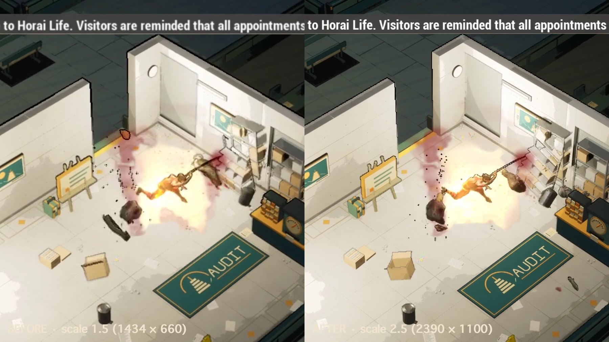
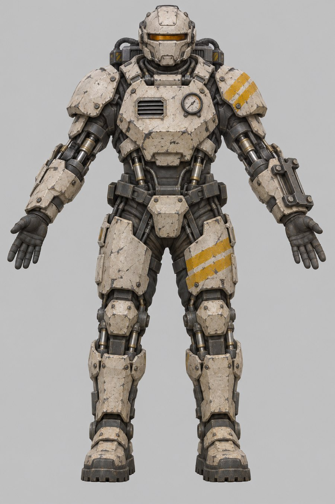

Full rooms, a new Galahad, and one black frame
The evening after the six endings. Every guardian's room is dressed to its story, Galahad is rebuilt from a drawing, the ultimate gets an impact frame and a proper landing, and the phone turns out to have been drawing a quarter of its pixels.
The afternoon's post ended with six endings and a list of what was missing from them. The evening went to that list, and then to five things the owner noticed while playing.
The endings, rebuilt on clips already owned
This afternoon's post said she never sheathes her sword, because there was no clip for it. That was wrong. A sheathing clip and a drawing clip were already in the project, and so were a launcher, an air cut and a dive from the same sword set that had been left out when it was first brought in.
So five of the six endings were rebuilt on them:
- Diced opens with a real rising cut. She puts the sword away, draws it, and puts it away again, and the blade is gone while it is away.
- Bisected and Stamped end on the same sheathing.
- Launched has her chase with a dashing air cut instead of a dodge.
- Spiked uses a launcher that takes her off the floor, a cut on the way up, and a dive with its own landing.
- Pinned is unchanged.
She wears no scabbard, so the sword is simply hidden once her hand reaches her hip. It reads as put away. There is nothing for it to go into.
The phone was drawing a quarter of its pixels
The owner played on the newest iPhone and found everything soft: textures, edges, all of it.
It was a setting. The game had a resolution measured for one older phone and a lower default for every other. The newest phone had no figure of its own, took the default, and drew at half its native resolution each way.


The newer phones now get more. The picture above is a simulation on the Mac. The setting is not on a phone yet, and whether a busy fight still holds its frame rate at the higher figure has not been measured.
Every guardian's room, dressed
The owner looked at the boss rooms and found them empty. Counting confirmed it: most held between five and twenty-eight pieces of furniture in a room more than twenty metres across.
Each guardian now has a list of their own, and the room is dressed from it:
- Along the walls: the Maintenance Chief's ladders, drums and fuse boxes. Whisper's filing cabinets and queue seats. The Collector's leather chair, safe and specimen jars. The Conductor's orchestra chairs, still set out, with nobody in them.
- On the walls: signs in each guardian's colour. The Chief's reads DAYS SINCE LAST INCIDENT: 0. The Chair's reads QUORUM: 1.
- Across the floor: flat litter that she walks over. Paperwork for Whisper, sheet music for the Conductor, cables for the Envoy.
- Painted on the floor: a queue line for Whisper, a red aisle for the Chair, a stave for the Conductor, a sun of sixteen rays for the Sun Messiah.


None of it has collision and none of it stands in the open floor. The fights were tuned in these rooms, and nothing added may change how one plays. The owner was offered solid props in the middle of the larger rooms and chose to leave the fights as they are.
Galahad, from a drawing
Galahad was the last guardian wearing a model adapted from someone else's. He was remade the way the Porter and the Pacer were: a front and a back drawing, the owner builds and animates the model in Tripo, and it is carried onto the game's skeleton.


The model came back with six ten-second clips, most of each spent standing. Only the move was kept: a braced guard, a heavy walk, a ram, a sweep, and a hunched crouch for when he is brought down.
His shield took four tries, each after the owner saw the last:
1. A ceramic slab on his forearm. It hid him completely. 2. The same slab, smaller. When his arms went overhead it lay flat above him like a table. The overhead slam was dropped. 3. A pane of light. The owner asked for an energy shield, and not a bright one. 4. An oval, floating in front of his fist. The owner asked for an oval that sits over the hand and not on it.
One black frame
The owner wanted impact frames on Rin's ultimate: the single stark frame an animator drops in at the moment of a hit.
As her heel meets the pommel, the picture snaps to a white line drawing, then to black with a white ring growing from the kick, and back to colour as the sword flies. There are ten variants in the pack. The owner's decision was to deal one at random each time.
Seeing it on film showed something else. Her landing after the kick was wrong: leaning back, half turned away. The kick's own clip is now left once her knee is back, for a proper landing from the sword set.
Sparks, steam and butterflies
Last, an effects pack: sparks, steam, fire, embers, drips, butterflies and fireflies.
Every guardian's room has two to five of its own. Cold steam along the floor for the Winter Widow. Small fires and embers for Homura. Lamp fires for the Sun Messiah. Butterflies over the gardens. About two ordinary rooms in five get one as well.
In the fights, a guardian's blow throws dust off the floor, a second phase begins in smoke and sparks, and the endings' last blows break the floor up.
At the pack's own size the effects were too small for the game's high camera. They are half as big again now.
What has not been checked
- Nothing here has been played by hand. Every film is the game's own bot.
- Nothing here is on a phone. The sharper setting, the effects and the impact frames are all unmeasured there. The effects pack does not list iOS among its platforms.
- The endings were filmed on the Porter only. In the rebuilt set, the sheathing in two endings and the dash in one were not confirmed from stills.
- The signs' wording is the agent's, not yet the owner's.
- Nine of the ten impact frames have not been seen. The moment the effect is set off was timed on the first.
- Galahad's ram may not land on the beat of his attack, and his kneel and a finish call on the new body were not filmed. His shield still tilts with his hand.
- The Winter Widow's steam does not show against her white floor, and drips cannot be seen at all.
- Thirteen of the seventeen room pictures were taken before the effects were enlarged.
- The automated tests that need no special setup pass. The stills were looked at by the agent that built them, not watched in motion.
Next: the owner's eyes on all of it, on a phone.